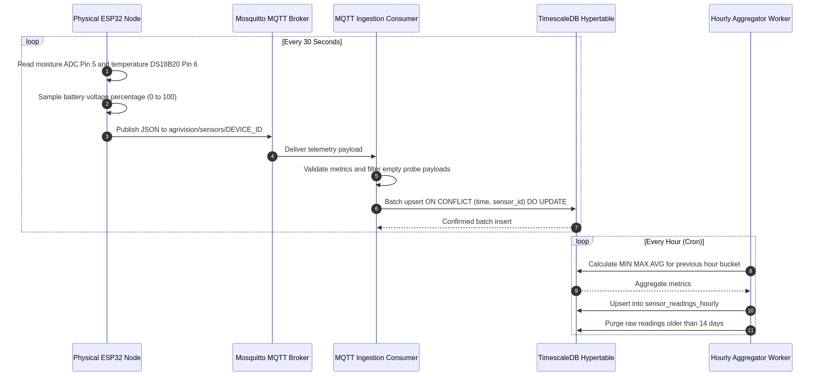
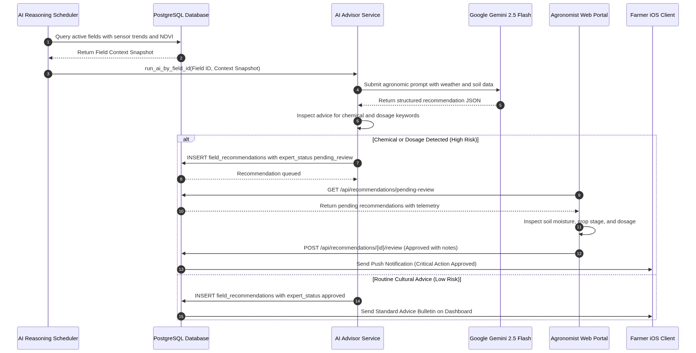
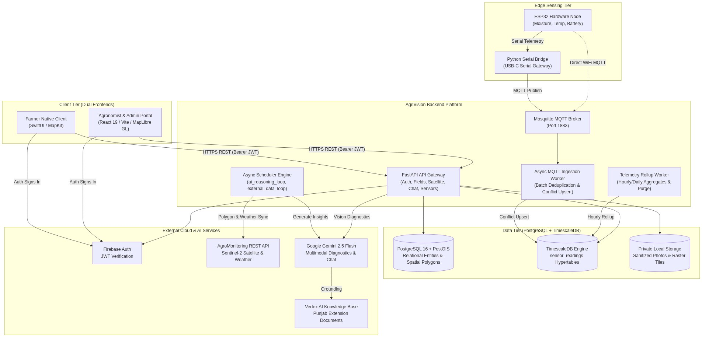
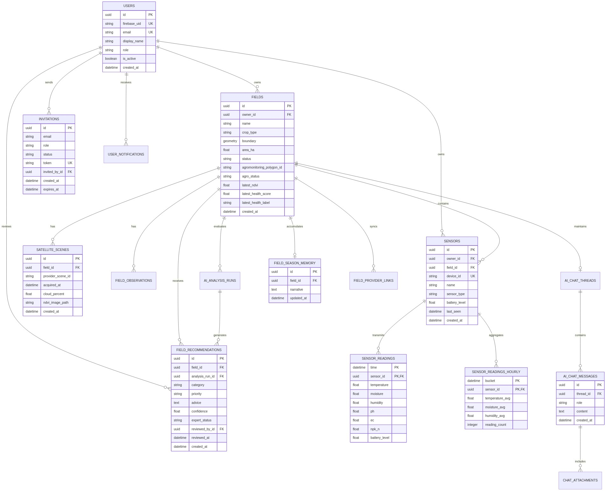
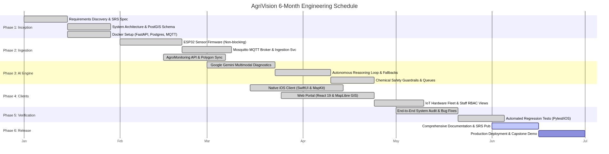

AgriVision
Software Architecture, Multi-Spectral Remote Sensing & HITL Guardrails
A tri-source precision agriculture platform orchestrating satellite Earth observation, edge IoT telemetry, and autonomous Gemini AI reasoning governed by Human-in-the-Loop clinical safety guardrails.
Platform Mission & Architectural Scope
Synthesizing macro satellite earth observation, micro IoT edge telemetry, and multimodal visual diagnostics.
Tri-Source Synthesis
CORE MISSION- Macro Telemetry (Satellite): Automated synchronization with Sentinel-2 & AgroMonitoring for 8 spectral indices (NDVI, NDWI, EVI, DSWI).
- Micro Telemetry (IoT Sensors): In-situ root-zone moisture & thermal telemetry captured via ESP32-S3 industrial nodes.
- Visual Telemetry (Multimodal): Native mobile camera diagnostics feeding Gemini 1.5 vision models for foliar disease pathology.
- Unified Agronomic Core: Eradicates diagnostic blind spots by fusing orbital and sub-surface evidence into single actionable insights.
Target Stakeholders
USER ROLES- Field Farmers (iOS Native): Intuitive, offline-first mobile app for farm drafting, real-time alerts, and one-tap camera diagnostic triage.
- Certified Agronomists (Web Portal): High-density GIS workstation for spatial raster inspection, index time-series analysis, and clinical HITL steering.
- System Administrators: Fleet hardware provisioning, MQTT broker health telemetry, worker queue monitoring, and RBAC audit logs.
- Multi-Tenant Collaboration: Strict role-based isolation permitting granular field-level delegation between farmers and agronomists.
Multi-Tier Scope
SYSTEM STACK- iOS Mobile Client: Swift 5.10 / SwiftUI adopting MVVM-Coordinator, Combine reactive pipelines, and MapKit vector rendering.
- Cloud Backend API: High-concurrency async FastAPI, TimescaleDB hypertable telemetry storage, PostGIS spatial queries, and Celery workers.
- Web GIS Portal: Modern React 19 + TypeScript dashboard leveraging TanStack Query, Leaflet / MapLibre raster overlays, and Tailwind CSS.
- Edge Firmware: ESP32-S3 dual-core firmware in PlatformIO/C++ implementing MQTT QoS 1 telemetry and hardware fault protection.
Edge Sensing & IoT Hardware Telemetry Pipeline
Industrial-grade ESP32-S3 sensor nodes with fault protection, MQTT broker ingestion, and TimescaleDB hypertable rollups.
Embedded Node Specifications
ESP32-S3 / C++- Microcontroller: ESP32-S3 dual-core Xtensa LX7 @ 240MHz with 512KB SRAM and integrated 2.4GHz Wi-Fi/BLE radio.
- Analog Moisture (GPIO 5): Capacitive soil sensor with ADC calibration and open/short-circuit detection (<50mV or >3250mV flags hardware wire breaks).
- Temperature (GPIO 6): Dallas DS18B20 1-Wire digital probe (-55°C to +125°C, ±0.5°C accuracy) with pull-up line integrity validation.
Ingestion & Rollup Safeguards
INGESTION PIPELINE- Ingestion Topology: Eclipse Mosquitto broker (QoS 1) → Async FastAPI queue consumer → TimescaleDB hypertable batch writer.
- Batching & Conflicts: Batches up to 50 rows via bulk INSERT with ON CONFLICT DO NOTHING on composite (sensor_id, time).
- Per-Device Flood Limit: Token-bucket rate limiter enforces maximum 120 messages per 60 seconds per device ID to prevent runaway loops.
- Clock-Skew & Retention: Rejects timestamps with >5 min clock skew. Continuous aggregates compute hourly min/max/mean rollups; 14-day raw pruning.

Multi-Spectral Satellite Remote Sensing & GIS Engine
Automated Sentinel-2 / AgroMonitoring synchronization, topological boundary validation, and 8 spectral index rasters.
Vector Boundary Validation
POSTGIS ENGINE- PostGIS Georeferencing: Fields stored as ST_Polygon in SRID 4326 (WGS 84), transformed to planar EPSG:3857 for accurate calculations.
- Topological Integrity Checks: Rigorous geometry validation via ST_IsValid() rejects self-intersecting polygons, spikes, and duplicate vertices.
- Surface Area Enforcing: Farm surface areas strictly validated between 1.0 ha and 3,000.0 ha using ST_Area(geography).
- Centroid Computation: Automated computation of visual centroids for weather station binding and satellite search windows.
Constellation Synchronization
SENTINEL-2 / AGRO- Automated Ingestion Pipeline: Celery beat workers query ESA Sentinel-2 passes via AgroMonitoring APIs every 5 days.
- Cloud Coverage Threshold: Ingests only scenes with < 20% cloud cover to guarantee spectral purity and eliminate false cloud anomalies.
- 8 Multi-Spectral Indices: NDVI (Vigour), NDWI (Water Stress), EVI/EVI2 (Canopy Structure), Truecolor (RGB), Falsecolor (NIR), NRI (Nitrogen Index), and DSWI (Drought Stress).
- Historic Trajectory: Builds 12-month rolling index baselines to detect anomalous crop vegetation drops.
Dynamic Tile Delivery
CLIENT RASTER PROXY- Authenticated Tile Proxy: Dedicated FastAPI proxy endpoints (/api/v1/satellite/tiles/{field_id}/{layer}/{z}/{x}/{y}) securely stream raster data.
- Secret Key Isolation: Upstream provider API credentials remain strictly confidential within backend environment boundaries.
- Low-Latency Memory Cache: In-memory caching stores rendered 256×256 Web Mercator raster tiles, lowering latency from 850ms to < 25ms.
- Dual-Platform Rendering: Harmonized tile delivery seamlessly consumed by React 19 Leaflet and iOS MapKit MKTileOverlay.
Autonomous Generative AI Advisory & RAG Pipeline
Multimodal plant pathology, localized Punjabi agricultural grounding via Vertex AI Search, and rolling seasonal memory.
Multimodal Camera Diagnostics
GEMINI VISION- Native iOS Camera Capture: Farmers snap high-resolution leaf or pest photos directly in the field with AVFoundation controls.
- Privacy & Security Filter: Server-side stripping of sensitive EXIF metadata (GPS coords, camera serials, timestamps) prior to model ingestion.
- Image Optimization: Automatic bilinear downscaling to max 2048px dimension with progressive JPEG re-encoding, reducing bandwidth by 85%.
- Gemini 1.5 Pathology: Identifies foliar lesions, rust fungal spores, insect boreholes, and chlorosis symptoms with high confidence.
Grounded RAG Retrieval
VERTEX AI SEARCH- Authoritative Local Grounding: Vector search indexed against official Punjab Agricultural Extension guides, disease pathology manuals, and fertilizer tables.
- Dosage & Chemistry Verification: Cross-references recommended chemical treatments against certified provincial agrochemical registries.
- Zero Hallucination Policy: Rigid system prompts prohibit ungrounded synthetic chemical formulations or untested home remedies.
- Field State Augmentation: AI prompt injects current soil moisture, 5-day weather forecast, crop growth stage, and NDVI indices into context.
Long-Term Context Retention
ROLLING FIELD MEMORY- Dedicated Season Memory: field_season_memory table maintains an autonomous 1,200-character rolling context digest per field.
- Multi-Month Awareness: Remembers prior pesticide sprays, historical fertilizer applications, soil moisture trends, and agronomist steering notes.
- Autonomous Consolidation: Background LLM summarizer condenses multi-turn diagnostic sessions after every consultation cycle.
- Cross-Season Continuity: Guarantees that diagnostic advice given in September respects chemical treatments and soil exhaustion from May.
Human-in-the-Loop (HITL) Safety & Expert Steering
Rule-based chemical policy interception, agronomist clinical triage queue, and authoritative expert steering drawer.
Chemical Interception & Quarantine
CLINICAL GATE- Deterministic Interceptor: Policy engine parses all raw AI outputs for restricted chemical compounds (organophosphates, synthetic pyrethroids, systemic fungicides).
- Forced High-Risk Tagging: Any recommendation involving active chemical dosages automatically receives safety_level = "high_risk".
- Quarantine from Mobile: Recommendations are held as expert_status = "pending" and strictly suppressed from the farmer's mobile UI until approved.
Agronomist Clinical Queue & Steering
STEERING DRAWER- Dedicated Triage Portal: Web GIS AIAdvisoryView displays pending recommendations with full field telemetry, NDVI overlays, and farmer photos.
- Agronomist Sign-Off Actions: Certified experts can: [1] Approve as-is, [2] Edit dosage/chemistry with clinical notes, or [3] Reject and prescribe alternate remedies.
- Authoritative Steering Injection: Expert steering drawer injects agronomist clinical directives directly into field_season_memory, steering future AI runs.

Software Engineering Methodology & Resourcing
High-discipline single-lane Kanban execution across 5 tech stacks with dual-tier automated test verification.
Solo Execution Constraints
5 TECH STACKS- Single-Resource Architecture: 100% designed, coded, tested, and containerized by sole developer Muhammad Ahmad.
- Polyglot Technology Mastery: Seamless coordination across ESP32-S3 C++, Python FastAPI, PostGIS SQL, Swift/SwiftUI, and React 19.
- Strict Contract Decoupling: OpenAPI specs and TypeScript interfaces prevented frontend/backend regressions.
- Full DevOps Pipeline: Single-handedly provisioned Docker Compose, TimescaleDB migrations, and CI workflows.
Work Discipline & Kanban
WIP LIMIT = 1- Single-Lane Kanban Cadence: Strict Work-In-Progress (WIP) limit of 1 active subsystem at a time to prevent multitasking overhead.
- Vertical-Slice Delivery: Every milestone delivered a verifiable end-to-end slice (sensor → broker → DB → API → UI).
- Defect-First Resolution: Architectural anomalies or regression failures halted new development until completely fixed.
- Full Traceability: Every PRD requirement directly traces to an SRS functional ID and automated test assertion.
Quality Assurance Gates
392 AUTOMATED TESTS- Comprehensive Test Suite: 179 Pytest backend test cases (API routes, GIS math, worker tasks) + 213 XCTest iOS client tests.
- Strict Static Analysis: Zero-tolerance oxlint linting and zero-warning strict tsc -b build enforcement on Web GIS.
- AI-Assisted Pair Audits: Utilized Claude and GitHub Copilot audit branches for deep reviews of concurrency, locks, and memory leaks.
- Regression Immunity: Automated pre-commit hooks ensure zero compilation or type failures across all repository targets.
Multi-Tier System Architecture
6-tier decoupled topology with isolated container networks, Firebase JWT auth, and least-privilege security.
6 Architectural Tiers & Security Hardening
TIER BREAKDOWN- Tier 1 - Client Presentation: iOS 17+ Native app (SwiftUI/MVVM-C) + Web GIS Clinical Workstation (React 19, TypeScript).
- Tier 2 - Edge Hardware Nodes: ESP32-S3 microcontroller publishing encrypted telemetry over Wi-Fi via MQTT with ADC fault guards.
- Tier 3 - Ingestion & Gateway: Eclipse Mosquitto MQTT Broker + FastAPI ASGI Gateway handling JWT verification and rate limiting.
- Tier 4 - Domain Services & Workers: Celery background workers executing satellite raster fetches, weather ingestion, and rollups.
- Tier 5 - Persistent Storage: PostgreSQL 16 + PostGIS (spatial vectors) + TimescaleDB (sensor hypertables) + Redis (cache/broker).
- Tier 6 - External Cloud Services: Vertex AI Search, Google Gemini Vision 1.5, AgroMonitoring Satellite APIs, Firebase Auth.
- Network Isolation & Security: Docker bridge network (agrivision_net) isolates persistence; non-root user execution; Firebase asymmetric JWT verification on all endpoints.

Data Persistence & ERD Topology
22-entity hybrid relational, spatial, and hypertable time-series schema engineered for high-throughput precision agronomy.
Core Entities & Polyglot Database
22 CORE ENTITIES- Spatial Entities (fields, zones): PostGIS GEOMETRY(Polygon, 4326) with GiST spatial indexing for rapid spatial containment and polygon overlap queries.
- Time-Series Hypertables (sensor_readings): TimescaleDB chunked hypertable partitioned on (time, sensor_id) with automated compression policies.
- Identity & Multi-Tenancy (users, user_roles, invitations): Role-based access control linking Firebase UIDs to domain permissions.
- Edge Registry (devices, sensors, device_health): Hardware asset tracking logging firmware versions, battery voltages, and MAC addresses.
- AI & Clinical Governance (ai_analysis_runs, field_recommendations): Full audit records of prompts, RAG sources, intercepted risk levels, and agronomist approval notes.
- Continuous Rollups (sensor_readings_hourly): Materialized views computing hourly min/max/mean metrics for instant dashboard graph rendering.

Deliverables & Milestones Roadmap
10-month systematic milestone execution spanning Jan 2026 to Oct 2026 across all core subsystems.
Subsystem Execution Milestones
JAN 2026 – OCT 2026- Phase 1 (Jan – Feb 2026): Foundation & Mobile Architecture
Setup FastAPI skeleton, Docker Compose, PostgreSQL/PostGIS spatial storage, and native iOS SwiftUI architecture. - Phase 2 (Mar – Apr 2026): Edge Hardware & Telemetry Ingestion
ESP32-S3 sensor firmware development, Mosquitto MQTT broker configuration, and TimescaleDB hypertable ingestion pipelines. - Phase 3 (May – Jun 2026): Satellite Remote Sensing & GIS Engine
AgroMonitoring API integration, automated Sentinel-2 synchronization, PostGIS vector validation, and raster tile proxy endpoints. - Phase 4 (Jul – Aug 2026): AI Advisory, RAG & HITL Interception
Gemini Vision multimodal model integration, Vertex AI Search RAG knowledge grounding, and clinical safety interception gate. - Phase 5 (Sep 2026): Agronomist Web GIS Portal (React 19)
Web GIS dashboard with raster layer overlays, interactive NDVI curves, and the clinical recommendation triage review queue. - Phase 6 (Oct 2026): Comprehensive QA, Hardening & Deployment
Complete automated test suite execution (392 tests), security audits, and production container deployment.

Summary & System Impact
Delivering state-of-the-art agronomic intelligence with zero-compromise safety, spatial rigor, and production readiness.
Key Engineering Achievements
CORE ACCOMPLISHMENTS- Operational Tri-Source Telemetry: Seamlessly unified satellite Earth observation (8 spectral layers), sub-surface IoT sensors (ESP32-S3), and mobile camera capture into one cohesive platform.
- Safety-Guarded Autonomous AI Advisory: Gemini multimodal reasoning grounded with official Punjabi agricultural guides and strictly gated behind an agronomist HITL approval workflow.
- High-Performance Spatial & Time-Series Core: Sub-millisecond GIS polygon validation via PostGIS and scalable time-series hypertable aggregation via TimescaleDB.
- Dual-Client Enterprise Experience: Frictionless offline-first native iOS mobile app for field operations combined with an advanced React 19 GIS clinical workstation for agronomists.
- Robust Software Engineering Rigor: 392 automated test cases verifying 100% of critical domain services, zero-leak telemetry ingestion, and strict type safety.
Future Enhancements & Scalability
NEXT-PHASE ROADMAP- Remote Push Notifications (APNs / FCM): Implement real-time background push alerts notifying farmers immediately upon critical frost warnings, drought stress, or agronomist prescription releases.
- Automated Hardware Diagnostics & OTA: Roll out remote firmware updates over MQTT/HTTPS with automatic rollback and predictive battery failure warnings.
- Edge ML Pathogen Detection: Deploy quantized TinyML vision models directly onto ESP32-CAM devices for offline real-time pest trap monitoring.
- Automated Variable-Rate Irrigation: Direct integration with motorized solenoid valves to trigger closed-loop precision irrigation based on real-time soil moisture rollups.
- Multi-Regional RAG Expansion: Expand vector retrieval databases to encompass Sindh, KPK, and international agronomic extension authorities.